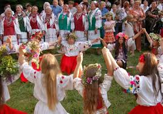

Це моя остання сторінка мого сайту
Починаємо!
Національні традиції
Колядування

У новий рік діти збиралися біля якоїсь хати та починали колядувати
Також весною виконують веснянки
Коли починалося весна, діти починали виконувати веснянки. Вони всі радуються, граються тому що зима уйшла, а весна - прийшла
Ще одна національна традиція яка виконується весною - це пасха
На пасху всі діти і дорослі розкрашували яйця.Їх називали писанками.
Більше інформації знаходиться на вікіпедії